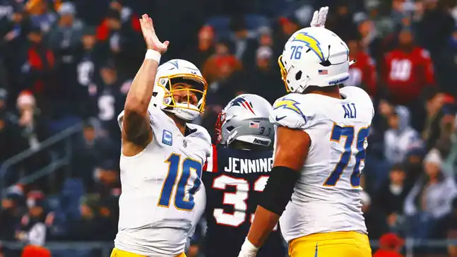

<link rel="stylesheet" href="../css/pages/secao_Artigos.css">

<section class="container secao6">
    <div class="col-12 h-100 d-flex flex-column">
        <h1>Artigos</h1>
        <div class="col-12 d-flex flex-column flex-lg-row">
            <div class="card col-12 col-lg-4 mb-4">
                
                <button type="button" class="btn btn-dark position-absolute align-self-end me-2 mt-2">Play-offs</button>
                <div class="card-body">
                    <div class="d-flex flex-row align-items-center">
                        
                        <p class="mt-3 ms-2">Patrick Mahomes.</p>
                    </div>
                    <p class="card-text"><small class="text-body-secondary">Postado em 29/12/2024</small></p>
                    <p class="card-text">Visualização dos playoffs da NFL de 2024</p>
                    <p class="card-text"><small class="text-body-secondary">Mais quatro vagas na pós-temporada ainda em disputa na Semana 17.</small></p>
                </div>
            </div>
            <div class="card col-12 col-lg-4 mb-4 mx-lg-2">
                
                <button type="button" class="btn btn-dark position-absolute align-self-end me-2 mt-2">Bengals</button>
                <div class="card-body">
                    <div class="d-flex flex-row align-items-center">
                        
                        <p class="mt-3 ms-2">Josh Allen.</p>
                    </div>
                    <p class="card-text"><small class="text-body-secondary">Postado em 29/12/2024</small></p>
                    <p class="card-text">Bengals permanecem vivos na corrida dos playoffs</p>
                    <p class="card-text"><small class="text-body-secondary">Com a vitória dramática de 30-24 na prorrogação sobre os Broncos.</small></p>
                </div>
            </div>
            <div class="card col-12 col-lg-4 mb-4">
                
                <button type="button" class="btn btn-dark position-absolute align-self-end me-2 mt-2">Chargers</button>
                <div class="card-body">
                    <div class="d-flex flex-row align-items-center">
                        
                        <p class="mt-3 ms-2">Lamar Jackson.</p>
                    </div>
                    <p class="card-text"><small class="text-body-secondary">Postado em 29/12/2024</small></p>
                    <p class="card-text">Chargers garantem vaga nos playoffs</p>
                    <p class="card-text"><small class="text-body-secondary">Na primeira temporada de Jim Harbaugh com goleada de 40-7 sobre os Patriots.</small></p>
                </div>
            </div>
        </div>
        <div class="align-self-start">
            <nav aria-label="Navegação">
                <ul class="pagination">
                    <li class="page-item">
                        <a class="page-link" href="#" aria-label="Anterior">
                            <i class="fa-solid fa-arrow-left"></i>
                        </a>
                    </li>
                    <li class="page-item">
                        <a class="page-link" href="#" aria-label="Próximo">
                            <i class="fa-solid fa-arrow-right"></i>
                        </a>
                    </li>
                </ul>
            </nav>
        </div>
    </div>
</section>